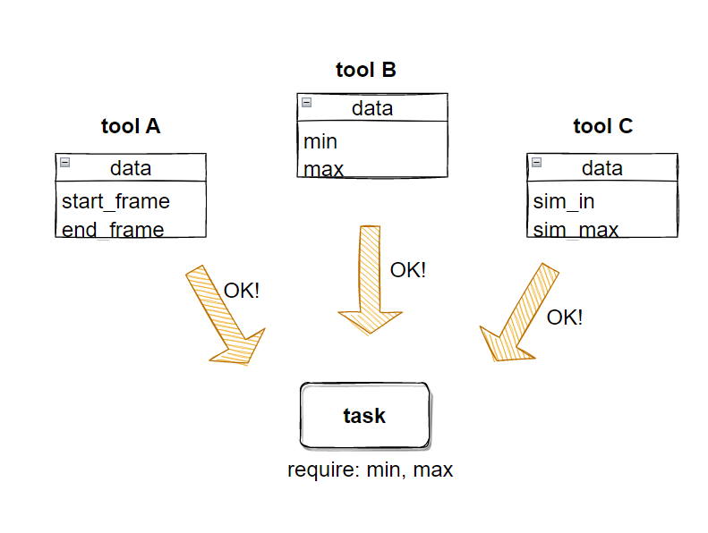

Config
config options
to write each task config.
we use key-value below.
| key | require | type | description |
|---|---|---|---|
| name | o | str | name of task |
| module | o | str | path to task |
| comment | - | str | |
| data_key_replace | - | dict | replace key name whitch used in data |
| data_defaults | - | dict | default value for specific key |
| data_override | - | dict | override value for specific key |
| conditions | - | list | condition for execute task |
| break_on_exceptions | - | bool | stop process when error occur |
data_key_replace
eplace key name whitch used in data
config
data_key_replace:
min: start_frame
max: end_frame
in this case, start_frame replaced to min and end_frame replaced to max
script
# -*-coding: utf8-*-
from puzzle2.Puzzle import Puzzle
config = [...]
data = {
"start_frame": 101,
"end_frame": 200
}
puzzle = Puzzle()
puzzle.play(config, data)

data_defaults
set default values.if we set default values.
we don't have to add key to data.
config
data_defaults:
min: 101
task
def main(event={}):
data = event.get("data", {})
cmds.playbackOptions(min=data["min"], max=data["max"])
print("{} - {}".format(data["min], data["max"]))
script
# -*-coding: utf8-*-
from puzzle2.Puzzle import Puzzle
config = [...]
data = {
"main": {
"max": 200
}
}
puzzle = Puzzle()
puzzle.play(config, data)
# 101 - 200
data_override
if data_override exists, value will override to spesific value.
config
data_override:
min: 101
task
def main(event={}):
data = event.get("data", {})
cmds.playbackOptions(min=data["min"], max=data["max"])
print("{} - {}".format(data["min], data["max"]))
script
# -*-coding: utf8-*-
from puzzle2.Puzzle import Puzzle
config = [...]
data = {
"main": {
"min": 0,
"max": 200
}
}
puzzle = Puzzle()
puzzle.play(config, data)
>> 101 - 200
# min 0 was overrided by config
conditions
set conditions, then task will execute when condition passed
config
conditions:
- change_frame_flag: false
task
def main(event={}):
data = event.get("data", {})
cmds.playbackOptions(min=data["min"], max=data["max"])
print("{} - {}".format(data["min], data["max"]))
script
# -*-coding: utf8-*-
from puzzle2.Puzzle import Puzzle
config = [...]
data = {
"main": {
"min": 0,
"max": 200,
"change_frame_flag": False
}
}
puzzle = Puzzle()
puzzle.play(config, data)
in this case, this task will skipped.
usually we use this when executing tasks from GUI.